Ocean diagnostics for ORCA025.L75 experiment "HN71"
Ocean-only forced simulation: COREv2
Info: NEMO 3.6 + LIM 3 (EC-Earth 3.2.2)
Simulation mastermind(s): SMHI / Klaus
Last updated: 2017-06-11 at 13:38:46
Created on 'TRIOLITH.nsc.liu.se'
Meridional and zonal cross-sections of T & S (specified in data/TS_sections.dat)
Cross-section 'Atlantic 22W':
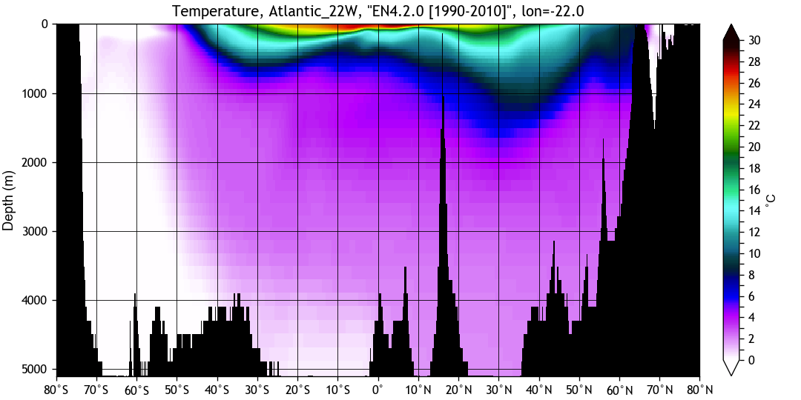
Cross-section 'Atlantic 57N':

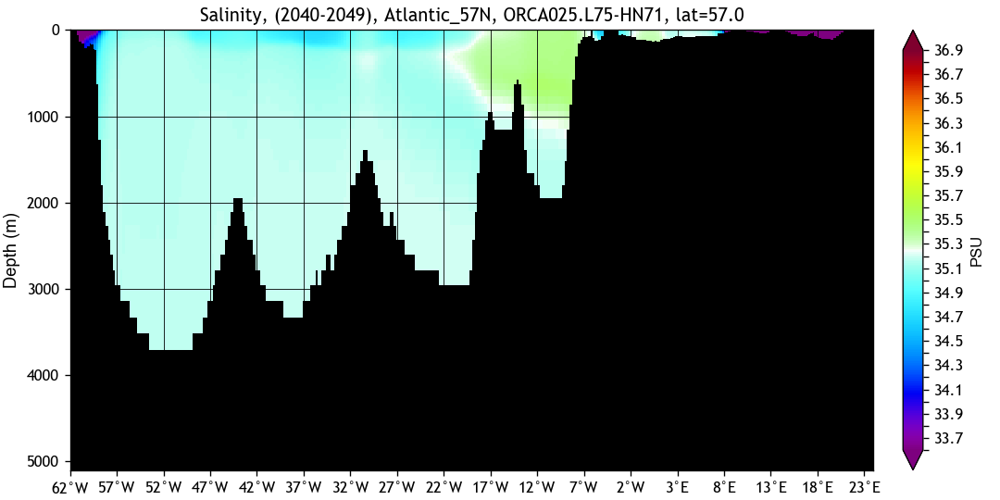
Cross-section 'Drake 58S':
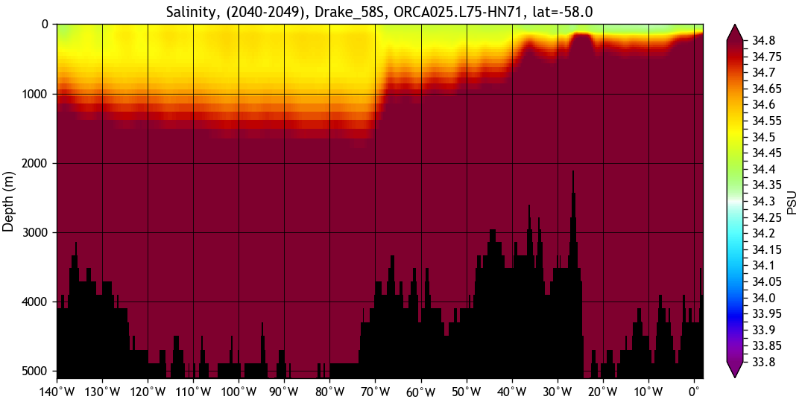
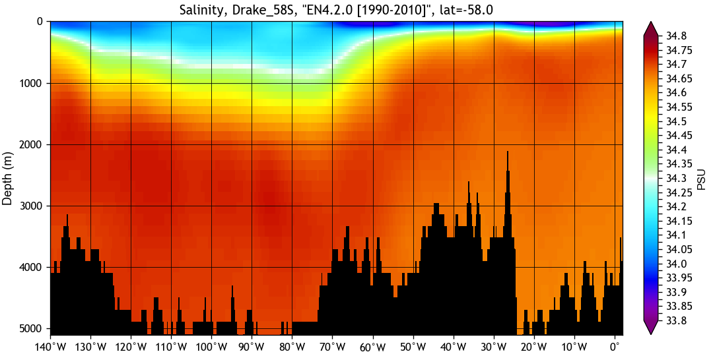
Cross-section 'Eq Atlantic':
Cross-section 'Eq Pacific':
Cross-section 'Gibraltar 36N':
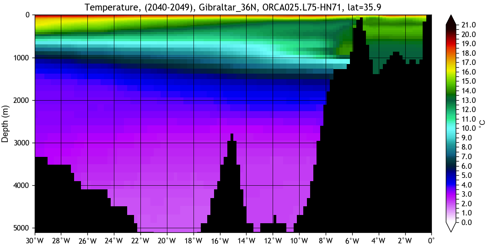
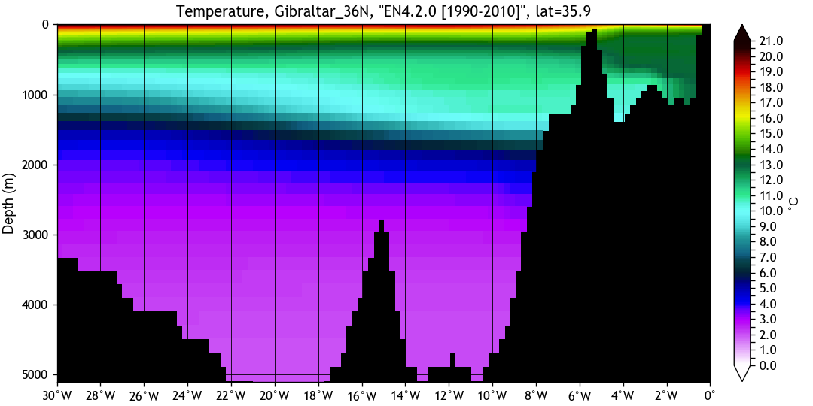
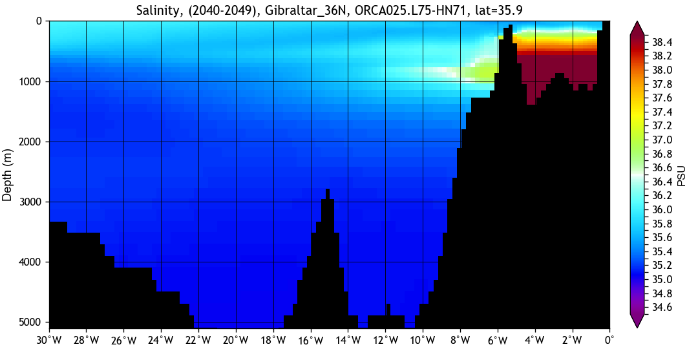
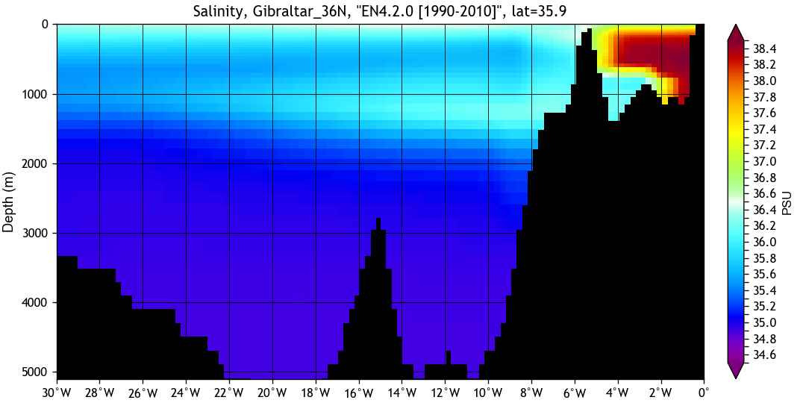
Cross-section 'Indian 77E':
Cross-section 'MedSea 19E':
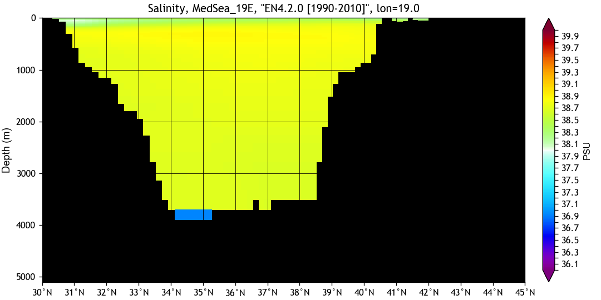
Cross-section 'Pacific 144W':

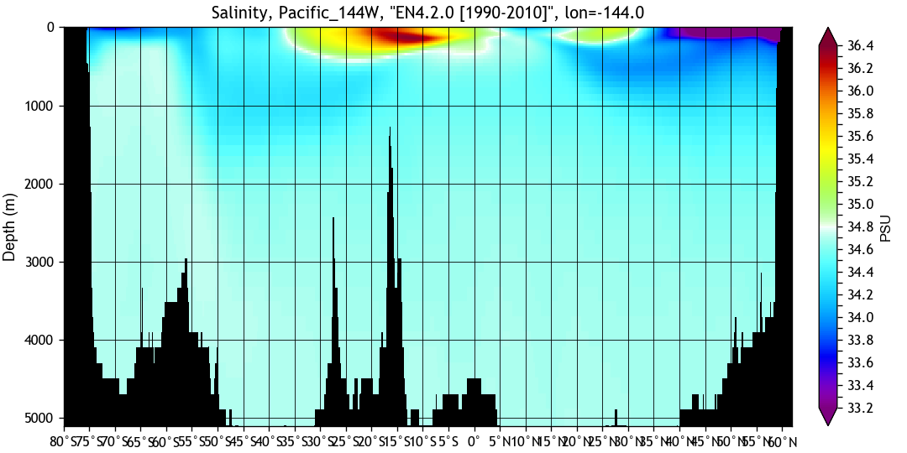
Cross-section 'Pacific 173W':
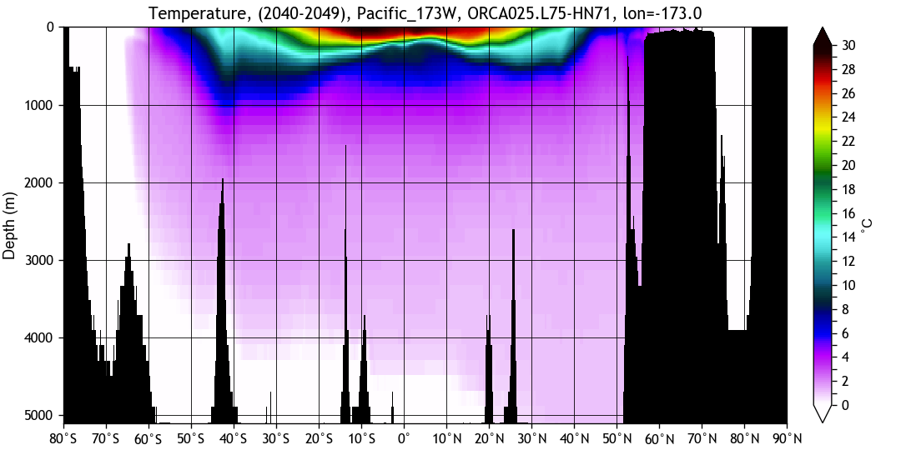
Cross-section 'Weddell 37W':
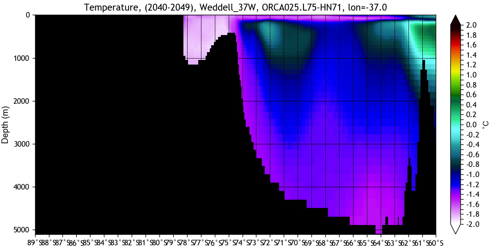
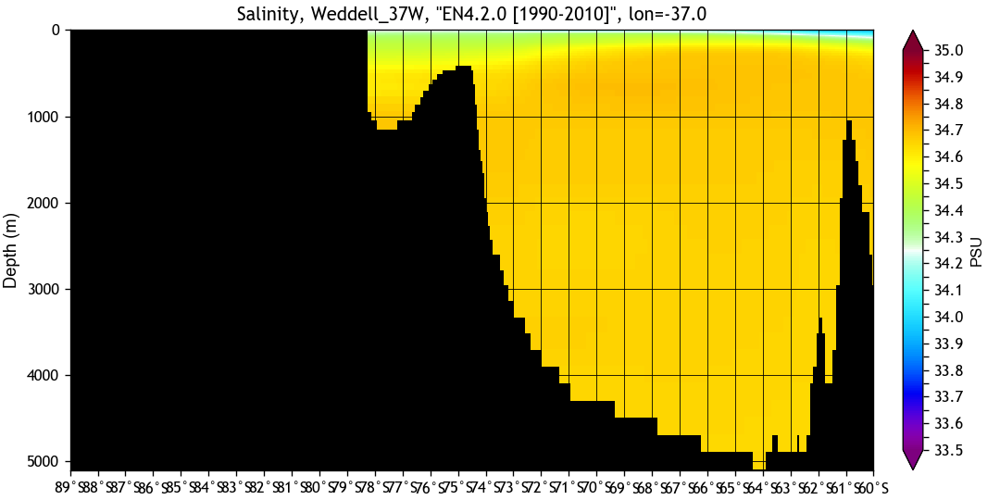
Cross-section 'Weddell 67S':
Page and diagnostics created with BaraKuda...